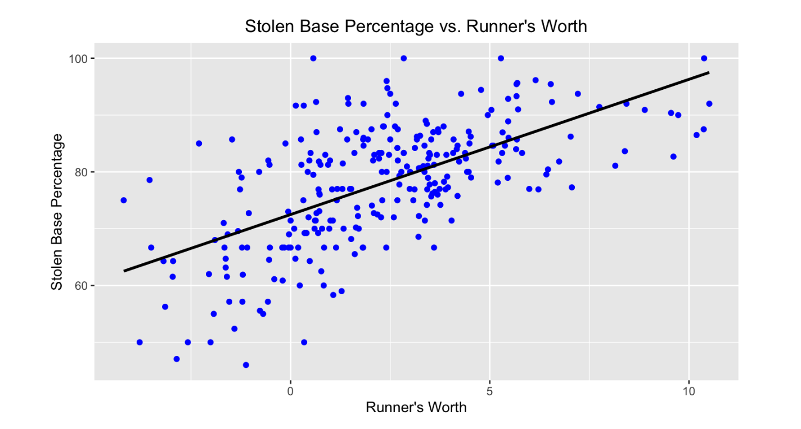

Runner's Worth: A New Way to Evaluate Pitchers
by A. Carreno
Posted on 05/24/2024
Baserunning has always been a difficult aspect of baseball to quantify. Detailed metrics and statistics that measure the impact of a player’s baserunning are few and far between, and there don’t appear to be any real breakthroughs on the horizon where that is concerned. The most common baserunning metrics in today’s game mostly remain to be stolen bases and times caught stealing with the addition of a couple more advanced metrics such as UBR and wSB, which we will be discussing later on. Baseball Savant also now records the sprint speeds for players each season going back to 2015 as well as a player’s success rate in taking the extra base when attempting to go from first to third on a hit, for example. As such, it may be true that there is more to go off of than before when talking about baserunning, but it’s still not exactly a treasure trove of information. Through a stockpile of five season’s worth of basic baserunning data, regression analysis, and careful consideration of what metrics should go into the formula, I have attempted to come up with a more holistic statistic for a player’s worth on the bases. The name very much speaks for itself; I call it Runner’s Worth. In this post, we will delve into how exactly I came up with the formula, what goes into it and why, and how it compares to other baserunning metrics in terms of performance and evaluation.
The story behind the formula for Runner’s Worth is actfually fairly simple. I first considered what the current gold standard for advanced baserunning metrics is right now. As aforementioned, the reality is that there aren’t many, however, out of the few in public circulation, UBR is generally considered to be the most reliable and best at what it does. UBR, also known as Ultimate Base Running, is an advanced metric that attempts to quantify the exact value an MLB player adds to his team through his baserunning. It does this through considering each individual play on the bases and determining how much it positively or negatively affects the run expectancy of the next play. Here is an example: a runner successfully steals second base, leaving the batter with the situation of a runner on second with no outs versus a runner on first with no outs. Obviously, there is a greater chance of a run being scored in the former situation as opposed to the ladder. How much more? That’s obviously dependent on many different factors, but as a general rule of thumb, baseball sabermetricians default to the run expectancy matrix, a table that details the expected amount of runs to be scored in any given baserunning situation (a runner on first no outs has a run of expectancy of 1.43, for example). Using this tool, we can therefore estimate how much value a baserunner adds with each individual play. That is the basic intention of UBR and its calculation, which is a little too involved to lay out in complete detail.
Regardless, because of the thoroughness and precision of UBR and its measure of baserunning’s impact on runs being scored, it is gaining considerable popularity and is used more and more often. What I decided to do is compare three statistics I believe should be included in a formula for a statistic that best captures a player’s running value and ability: sprint speed, advance attempt success rate, and stolen bases above average (number of stolen bases a player has - (that player’s number of attempts * the average stolen base success rate)):
SB Above Avg = SB - ((SB + CS) * (Lg SB%))
I think these three measures provide a solid snapshot of a player’s baserunning ability: we get a sense for how fast they are (sprint speed), how smart their baserunning decisions are (advance attempts rate), and how exceptional they are at stealing bases. I created a large dataset that contains five years worth of data for these specific statistics and regressed them against UBR to see what their coefficients were. For the sake of more uniform data and numbers that were easier to work with, I scaled each of the three metrics using Z-scores. The results for the coefficients were the following: 0.47 for stolen bases above average, 0.11 for advance attempt success rate, and 1 for sprint speed. Now that I had these coefficients, I was ready to create the formula: just adding the three numbers together each multiplied by the coefficient obtained from the regression analysis. The only minor tweak I made to the formula was adding 1 to each coefficient as a way of making the distribution more spread out. Therefore, the Runner’s Worth formula is as follows:
Runner’s Worth = 1.47*SBAA + 1.11*Adv% + 2.00*SprintSpd
I proceeded to compute each player’s Runner’s Worth over the last five seasons with the probability density histogram below providing an idea of how the distribution for the statistic looks.
The distribution of Runner's Worth is largely centered between 0 and 5, although outliers above and below that both exist.
As we can see, there is a large cluster from around 1 to 4, which makes perfect sense. The mean Runner’s Worth for a baserunner with at least a league average of 11 stolen base attempts is 2.8. To be in the 75th percentile, which most would consider high tier, a player needs a Runner’s Worth of 4.36 or above. In terms of extreme cases, the highest Runner’s Worth recorded over the last five seasons is 11.36 by Starling Marte in 2021 when he played for the Miami Marlins and Oakland Athletics. He stole 47 bases that year (getting caught only 5 times) and posted a UBR of 3.9, which ranked 8th in the MLB that year. On the other side of the coin, the worst Runner’s Worth recorded for all qualified players is -3.63 by Andrew McCutchen in 2018 when he played for the San Francisco Giants and New York Yankees. He stole 14 bases that year, but was caught 9 times and posted a UBR of -4.2, which was the 7th worst in baseball that year. McCutchen is generally seen as a fast player who contributes on the basepaths, so 2018 seems to have been an especially off year for him from that standpoint. Nevertheless, now that we have a decent feel for Runner’s Worth and understand its distribution and tendencies, let's evaluate its performance and compare it to UBR.
Let’s first see how Runner’s Worth compares with UBR when it comes to predicting sprint speed and stolen base success rate as illustrated by the scatterplots below.
The correlation between sprint speed and Runner's Worth is clear and positive.
The positive relationship between stolen base percentage and Runner's Worth is also obvious.
There is clearly a fairly strong positive correlation between Runner’s Worth and sprint speed and stolen base percentage. The R^2 for these graphs backs up this claim as they come in at 0.46 and 0.38, respectively. This analysis demonstrates that typically the higher a player’s Runner’s Worth, the higher their stolen base rates are and the higher their sprint speed is. This conclusion should not come as a surprise considering those are two of the factors considered in the formula, but we are still able to confirm that Runner’s Worth is effective in making use of the important factors we previously laid out to determine a player’s value on the basepaths. Compared with UBR, Runner’s Worth is much more effective at predicting sprint speed and stolen base percentage.
The correlation between sprint speed and UBR is much less noticeable.
The relationship between stolen base percentage and UBR is even weaker.
UBR clearly is much less accurate in predicting sprint speed and stolen base percentage. It seems as though these two factors are mostly unrelated when it comes to UBR, which makes sense. UBR’s calculation does not really make use of stolen base rates per se, but rather how impactful a player’s stolen bases were on the expected outcome of the game. UBR also does not make any use of sprint speed in its calculation, so these results are mostly to be expected. The R^2 for the models are 0.001 and 0.05, respectively. These results indicate a total lack of correlation and further prove our suspicions. Still, even though it was to be expected, I find it interesting how the supposed gold standard for base running metrics has virtually nothing to do with the numbers one would expect to matter a lot in determining a runner’s value and ability such as their sprint speed and stolen base success rate.
Finally, we’ll look at how Runner’s Worth and UBR each predict other advanced base running metrics to make a more sophisticated comparison between the two. The specific metrics we’ll compare Runner’s Worth and UBR to will be Spd and wSB. Spd is a statistic created by the father of baseball sabermetrics, Bill James. It is more similar to Runner’s Worth in that it’s more focused on measuring baserunner ability rather than value added. It considers stolen base percentage, triples percentage, and runs scored percentage. It’s not as commonly used as UBR, but still provides a decent benchmark for baserunning ability at a more advanced level. On the other hand, wSB is more similar to UBR. It estimates how much value in the form of runs a player adds to his team through his stolen bases; the difference between wSB and UBR is that the former does not rely on the previously mentioned run expectancy matrix as a way of estimating run value; it has its own formula for doing so. In any case, wSB and Spd are both considered among the best base running metrics even if not up to the level of UBR. The below graphs display how correlated Runner’s Worth is with Spd and wSB.
wSB and Runner's Worth have a clear, positive relationship.
Spd and Runner's Worth also have a clear and positive relationship.
We see that there is a pretty significant positive correlation between Runner’s Worth and Spd and wSB. In fact, it appears to be even greater than the correlation it shared with stolen base percentage and sprint speed. This is confirmed by the R^2 for these models which are 0.66 and 0.47, respectively. It’s a pretty remarkable result considering the formula for Runner’s Worth is very different from those of wSB and Spd, but speaks to the effectiveness of Runner’s Worth in evaluating baserunning performance. UBR does not come even close in terms of predicting wSB and Spd.
The relationship between wSB and UBR, on the other hand, is markedly weaker.
Similar story for Spd and UBR.
The graphs don’t lie: UBR shows little correlation with Spd or wSB and the numbers support this as the R^2 for these graphs are 0.07 and 0.17. UBR has slightly more predictive ability with these two metrics, but still falls far behind Runner’s Worth. So what can we take from this? Does this mean Runner’s Worth is a better statistic for quantifying baserunning performance? To be frank, no–that is not the conclusion we can or should come to. The reality is that every statistic in sports is created with a specific purpose in mind; each number has its own identity in a way. UBR was never created to be some all-encompassing metric that attempts to put a single number on the complete value or profile of a baserunner. It simply considers how impactful a player’s decisions and actions during the course of a season on the basepaths are to his team’s success or failure. It does not consider all the aspects of baserunning ability, that was never its intended purpose. In my eyes, Runner’s Worth is much the same, but in the opposite way. It cannot be used in any way to evaluate a baserunner’s overall value in terms of contributing to a game’s outcome or how often runs are scored. However, what it can do is put a number on a player’s baserunning ability in the sense of how skilled a player is on the bases. It considers a player’s decision making, their raw and physical speed, and their stolen base technique while being more nuanced than your average statistic. It is no better than any other statistic that has ever been created, but to me, Runner’s Worth knows its purpose and carries it out well.